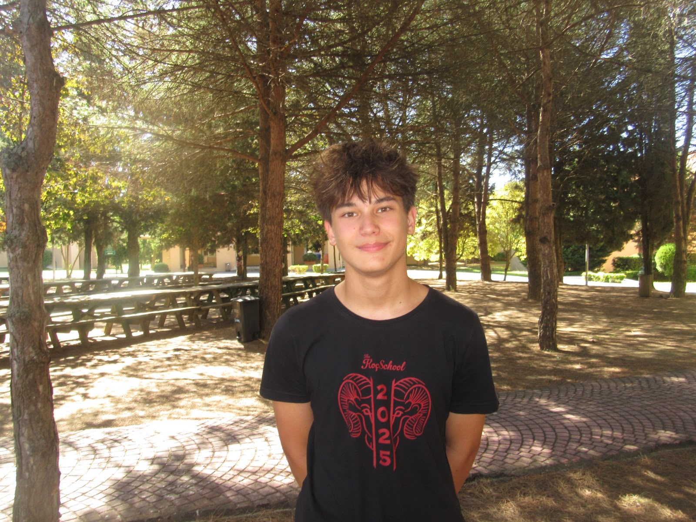
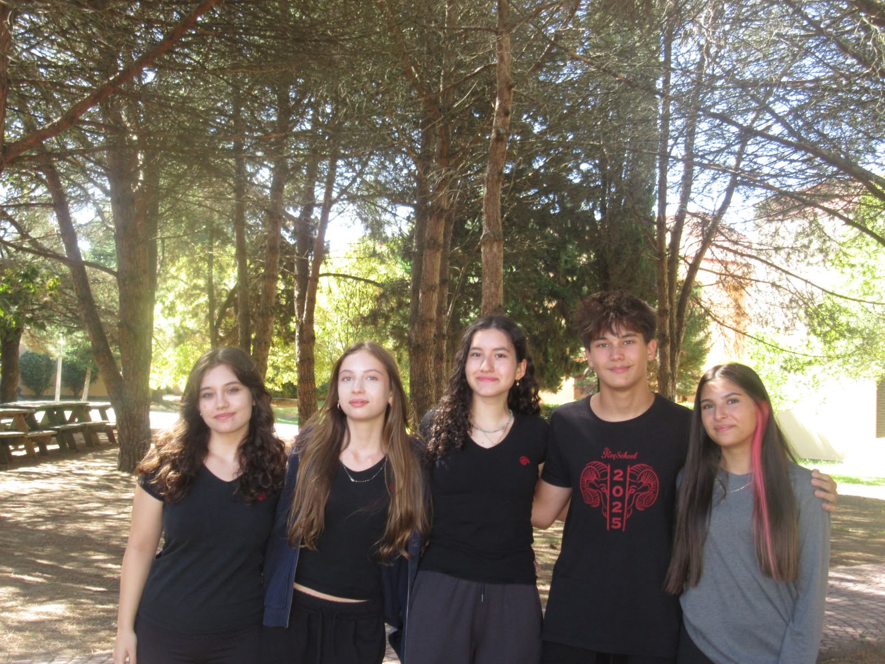
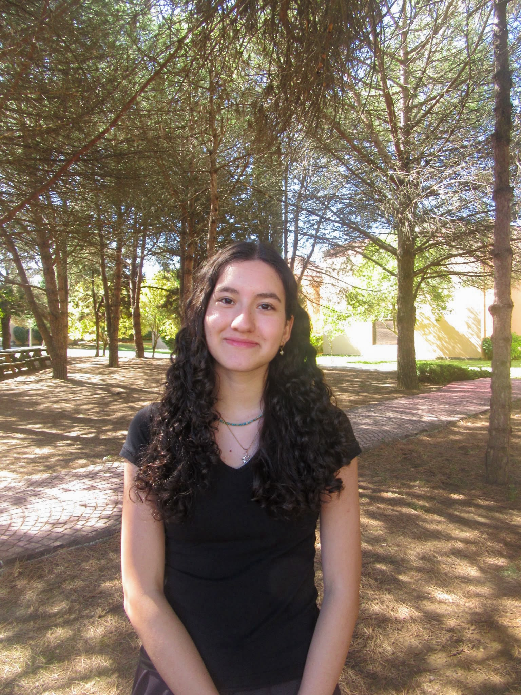
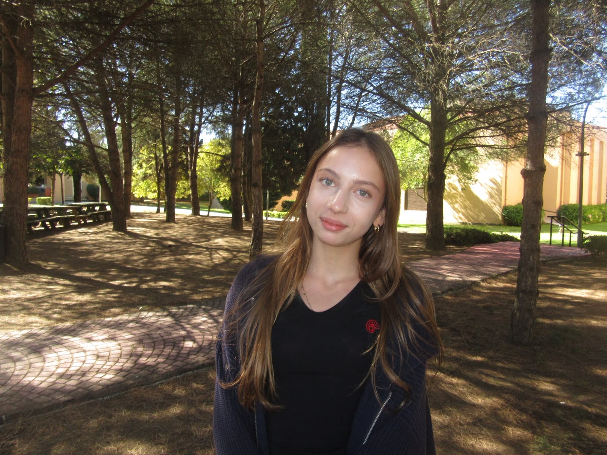
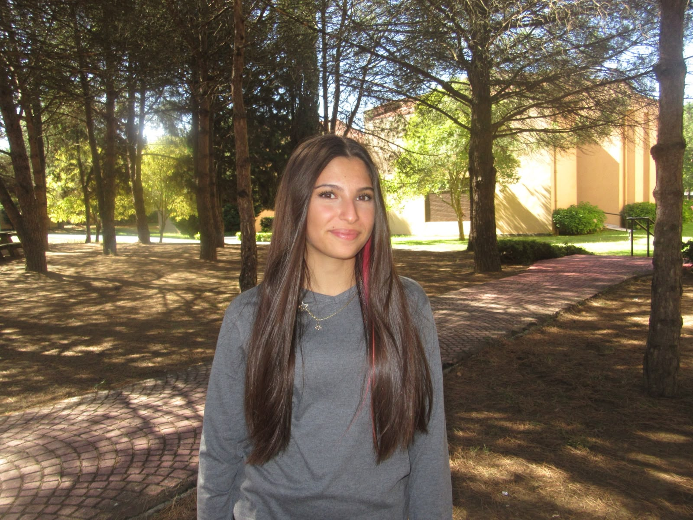
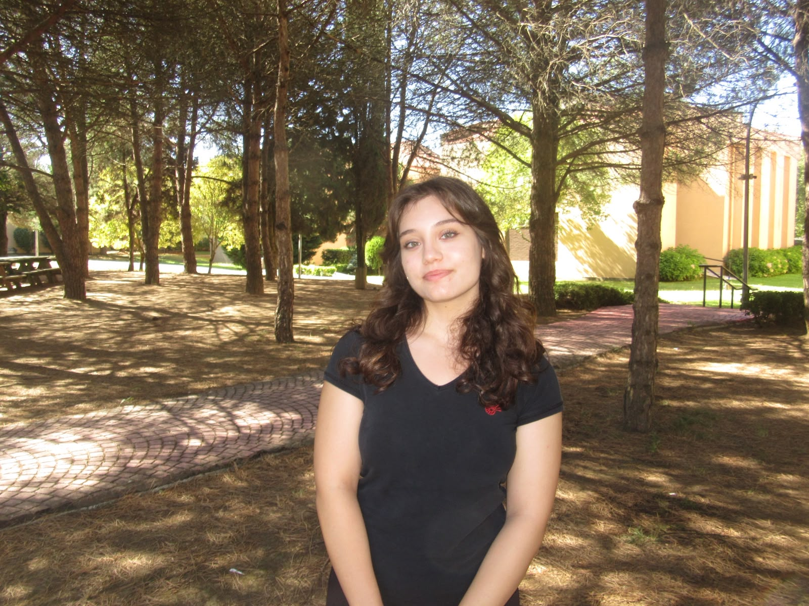

Digital Media
Sarp Savaşan
Storytelling & social
 PROJECT A.S.H.A.Türkiye chapter
PROJECT A.S.H.A.Türkiye chapter
The people behind the work
A youth-led chapter powered by people who believe that informed communities are safer communities.


Chapter Lead
The person guiding our chapter's direction, partnerships, and people.

Digital Media
Storytelling & social

Finance
Stewardship & planning

Outreach
Partnerships & community

Research
Evidence & education
Make this page yours
Replace each placeholder name and the portrait placeholder with your own details. A quick guide is included in the README file.